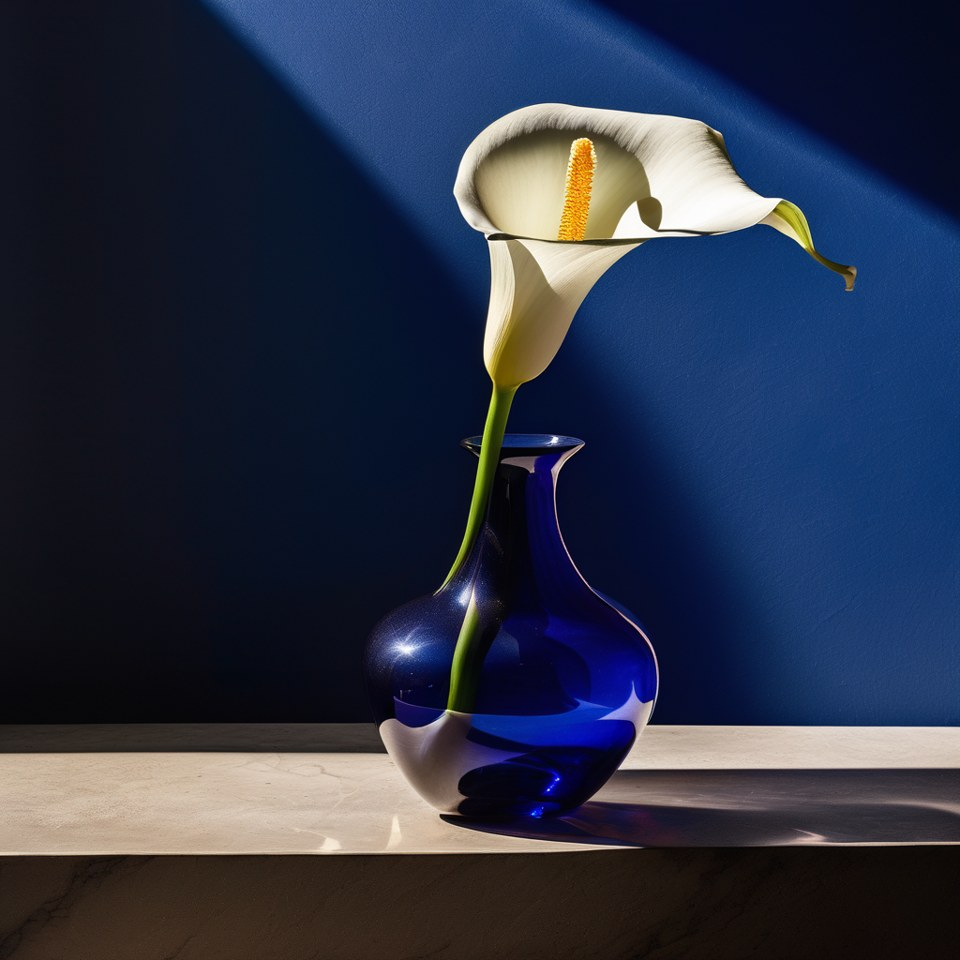
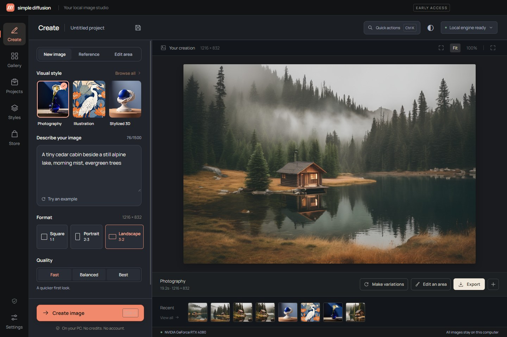
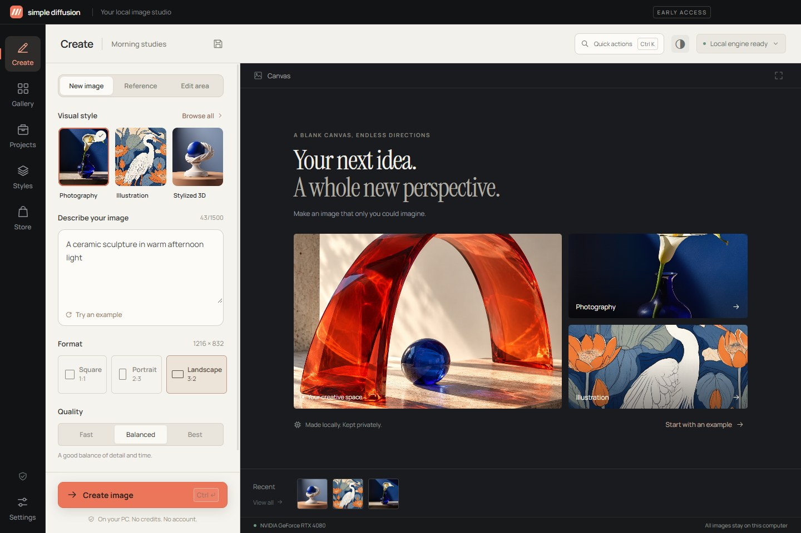
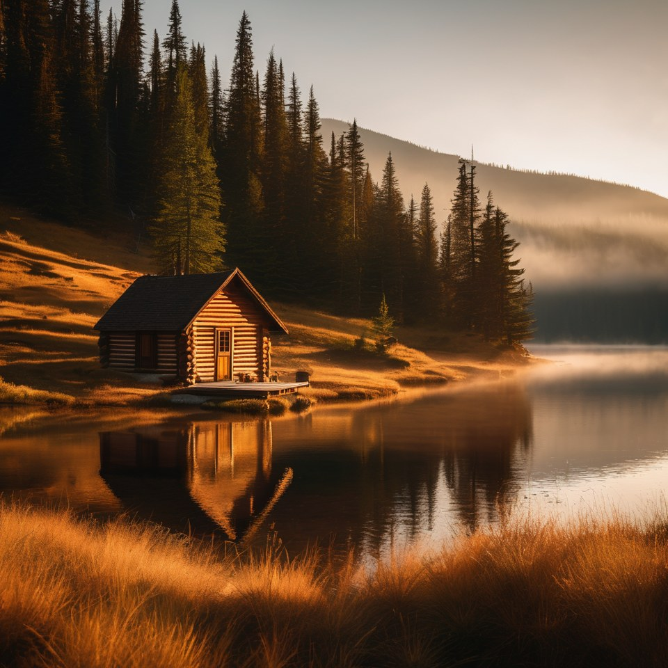
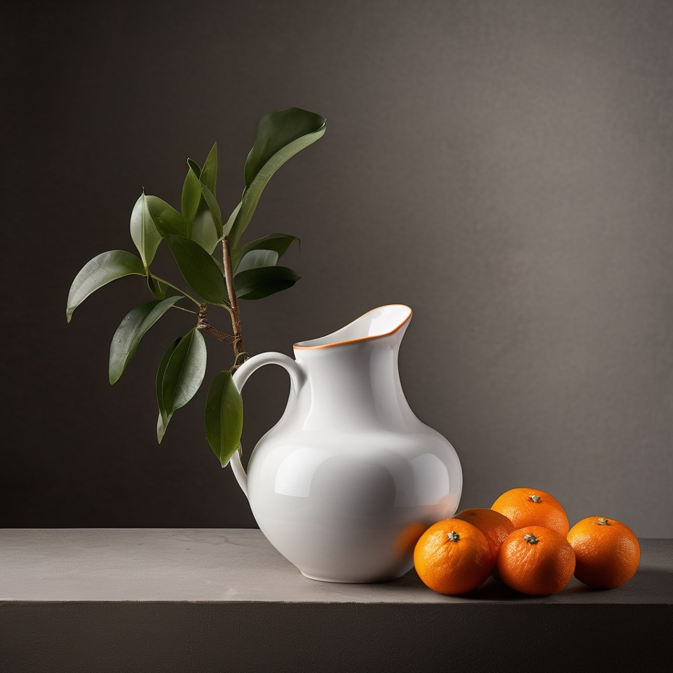
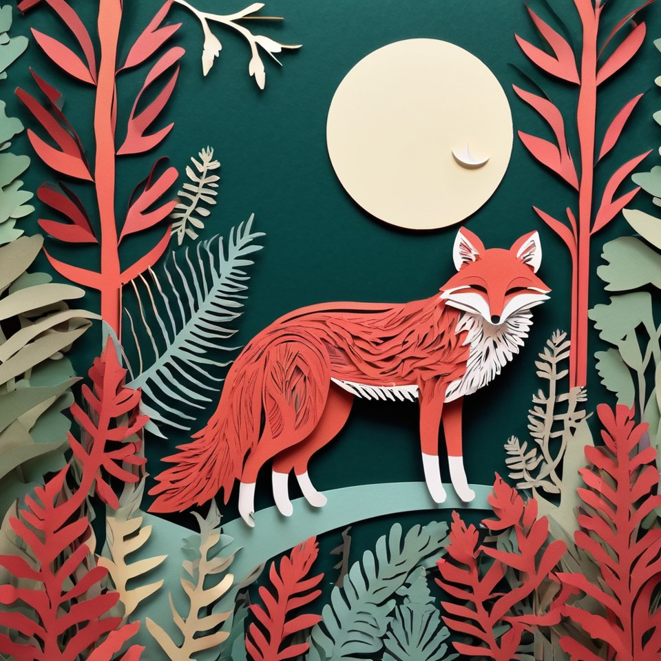

Start with a look.
Photography, illustration and sculptural 3D come included. Curated recipes give your description a starting direction.
A free local AI image generator for Windows. Pick a style, describe what you see, and make it on your PC—with no accounts or image credits.
App-only installer · Engine and model downloaded later
v0.6.0 · NVIDIA GPU required · Unsigned early access

01 / PHOTOGRAPHYA proper desktop workspace, from your first idea to the final export. Install the small app first. When you are ready, setup downloads the NVIDIA engine and SDXL model separately, then image creation runs locally.

Photography, illustration and sculptural 3D come included. Curated recipes give your description a starting direction.
Bring a reference image, make a variation, or paint the part you want to change. Preserve the area outside your painted selection at the chosen output size.
Projects, a searchable local gallery, reusable seeds and PNG/JPEG export keep your ideas organized on your computer.
The Windows installer is now just 169 MB. Open the app and explore before downloading the NVIDIA engine (~2.75 GB) and SDXL model (~6.9 GB). Setup shows the sizes, verifies downloads and supports pause/resume. Your installed engine stays in place across ordinary app updates.
Read the release notes →
Explore the collection lineup below. Starter styles and Warm Light are free. Additional collections are in test checkout only; live purchasing is disabled. These are style recipes, not extra AI models.
Photography, Illustration and Stylized 3D. Three everyday starting points.

Warm editorial photography with a softer, golden-hour feel.

Softbox Studio, Direct Flash and Low Key. Shape your scene with light.
Soft Neutral, Color Block and Glass & Glow. A closer look at form and material.

Layered Paper, Linocut Print and Folded Worlds. Tactile illustration recipes.
All collection examples were generated locally with the corresponding recipes. Results vary with prompt and seed. Test prices do not represent live sales.
Verified on Windows 11 with an RTX 4080 (16 GB VRAM). Physical 8/12 GB cards and fresh Windows installations still need wider testing. Driver 560.94+ required. Allow at least 20 GB free for setup, extraction and the model; images need additional space.
Installation guide & full requirements →Basic local image generation and the three starter styles are free, with no image credits or account requirement. Warm Light is a free optional recipe pack. Three additional collections currently have $5 one-time TEST checkout pages; live sales are disabled.
Generation works offline after the separate model download and setup. Model setup needs internet access. Opening GitHub release pages or the optional test checkout opens an external website.
This release requires an NVIDIA GPU with at least 8 GB VRAM, driver 560.94 or newer, and 16 GB system RAM. It has been tested on an RTX 4080 with 16 GB VRAM. Physical 8 GB and 12 GB cards still need validation. AMD, Intel, CPU-only and macOS generation are not supported in this release.
No. This repository contains public product information and release downloads. Application source is maintained privately. Third-party components retain their own licenses.
The app generates locally, has no telemetry and sends no prompts or images to an image-generation service. Its gallery, projects, references and draft recovery are stored on your PC. External GitHub and Lemon Squeezy pages have their own privacy policies.
Simple Diffusion focuses on a Windows desktop workflow: an installer, curated recipe styles, projects, a local gallery and guided editing. No head-to-head quality, speed or memory superiority has been established.
The bundled NVIDIA engine is large. Download the setup .exe and both numbered .bin files from the same release, keep all three together, and open the setup .exe. Model weights download separately.
The app contains an updater designed to verify a signed release manifest and a Windows-signed installer. Live update checks and installation are disabled in this unsigned early-access build. Use the official release page for manual downloads.
Free basic generation. Your hardware, your workspace.